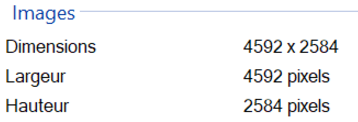

I. Les dictionnaires¶
TP : Le type dictionnaire¶
I. Découverte de la structure¶
Nous allons voir un nouveau type, le dictionnaire qui permet de regrouper des données, mais auxquelles on accède grâce à une clé plutôt que grâce à un indice, comme pour les tableaux et p-uplets.
-
Créer une variable
dico, initialement vide, avec l'instruction :dico = {}. -
Vérifier son type, en tapant
type(dico)dans la console. -
Ajouter un élément au dictionnaire avec la syntaxe suivante :
dico["nom"] = "Lennon", puis visualiser le contenu de la variable avec la console."nom"est une clé du dictionnaire, et"Lennon"une valeur. -
Rajouter d'autres éléments au dictionnaire :
On voit que le type des valeurs, comme celui des clés, peut varier (caractères, entiers, ou d'autres).dico["prénom"] = "John" dico["année de naissance"] = 1940 -
Consulter le contenu de
dicoet vérifier qu'il s'affiche sous la forme suivante :{'nom': 'Lennon', 'prénom': 'John', 'année de naissance': 1940} -
Que renvoie l'instruction
dico[0]? Expliquer. ................................................................................ - Que renvoie l'instruction
dico["prénom"]? ......................................
C'est ainsi que l'on accède à une valeur associée à une clé. -
Que renvoie l'instruction
len(dico)? ................. -
Quelles valeurs renvoient les instructions suivantes ?
dico.keys(): ..................................................................dico.values(): ................................................................-
dico.items(): ................................................................. -
On utilise ces fonctions pour faire des parcours de dictionnaire. Tester le code suivant :
Modifier ensuite le code pour afficher les clés du dictionnaire.for k in dico.keys(): print(dico[k])
-
On peut aussi créer un dictionnaire en utilisant la syntaxe suivante :
dictionnaire = {clé1: valeur1, clé2: valeur2}.
Créer un deuxième dictionnairedico_2avec cette méthode, dans lequel on stocke les informations suivantes : le nom"McCartney", le prénom"Paul", et la date de naissance1942.
II. Exercices¶
Pour chacun des exercices, vérifier la solution sur ordinateur, puis la noter sur votre feuille.
Exercice 1 : les données EXIF d'une image¶
Les photos numériques sont accompagnées de métadonnées, consultables dans leurs propriétés.

-
Représenter les données EXIF présentées ci-contre sous la forme d'un dictionnaire nommé
exif. -
Quelle instruction permet d'afficher la hauteur de l'image ?
Exercice 2 : un groupe de rock¶
On veut stocker la liste des membres d'un groupe de rock dans un dictionnaire rockband, c'est-à-dire :
| Clé | Valeur |
|---|---|
"chanteur" |
Julian Casablancas |
"guitariste rythmique" |
Albert Hammond Jr |
"lead guitariste" |
"Nick Valensi" |
"bassiste" |
"Nikolai Fraiture" |
"batteur" |
"Fabrizio Moretti" |
-
Ecrire l'instruction permettant de créer le dictionnaire correspondant.
-
Ecrire l'instruction renvoyant les noms de tous les membres du groupe.
-
Ecrire une fonction
est_membre(rockband, nom)renvoyantTruesinomest présent dans le groupe,Falsesinon. On fera un parcours de dictionnaire.def est_membre(rockband, nom): -
Tester si
"Nick Valensi"et"Bjork"appartiennent au groupe ou non.
Cours¶
Dans certains cas, on peut ne pas vouloir accéder à des données par leur indice comme avec un tableau ou un p-uplet, car une autre information (souvent de type caractères, mais les autres types sont possibles) aurait plus de sens. On utilise alors un dictionnaire.
Définition
Un dictionnaire est une collection non-ordonnée d'éléments. Ces éléments sont constitués d'une clé associée à une valeur.
A. Création¶
- Pour créer un dictionnaire vide, on utilise les accolades
{}ou bien le mot-clédict. - Pour créer un dictionnaire non-vide, on utilise les accolades suivies de couples
cle: valeurséparés par des virgules.
Exemples
d1 = dict() #d1 est un dictionnaire vide
d2 = {} #d2 aussi
dico = {"algorithme" : "suite d'instructions", "mémoire" : "espace de stockage des données", "processeur" : "unité de calcul"} #dico a 3 couples clé-valeur
B. Modification¶
- On ajoute un élément à un dictionnaire avec la syntaxe :
d[cle] = valeuroùcleetvaleursont des éléments de n'importe quel type de base (entier, flottant, caractères, booléen). - On peut modifier la valeur associée à une clé déjà existante en utilisant la même syntaxe.
Exemples
dico["programme"] = "algorithme écrit dans un langage de programmation" #ajoute un nouveau couple à dico
dico["processeur"] = "constitué d'une unité de calcul et une unité de commande" #modifie la valeur associée à la clé processeur
C. Parcours¶
On peut itérer sur les éléments d'un dictionnaire, de la même manière que l'on peut itérer sur les éléments d'un tableau ou d'un p-uplet (les types construits). Cela permet d'appliquer des algorithmes comme ceux vus sur ces autres types construits : recherche d'occurrences, calcul de statistiques, etc.
On peut utiliser différentes syntaxes :
C.I. Parcourir les clés¶
- La méthode (fonction qui s'applique sur les dictionnaires)
keys()permet d'accéder à la liste des clés.
Code
for cle in dico.keys():
print(cle, dico[cle])
- Si la méthode n'est pas précisée, par défaut le parcours se fera sur les clés :
Code
for cle in dico:
print(cle, dico[cle])
C.II. Parcourir les valeurs¶
La méthode (fonction qui s'applique sur les dictionnaires) values() permet d'accéder à la liste des valeurs.
Code
for v in dico.values():
print(v)
Attention !
On n'a alors pas accès à la clé associée à chaque valeur.
C.III. Parcourir les couples clé-valeur¶
La méthode (fonction qui s'applique sur les dictionnaires) items() permet d'accéder aux couples clé, valeur.
Code
for c, v in dico.items():
print(c, v)
Conclusion¶
Les dictionnaires complètent les tableaux et p-uplets en permettant de "ranger" différemment des éléments. Comme dans un dictionnaire au sens classique, on associe des valeurs (comme une définition) à une information (comme un mot). Ces structures sont ensuite utilisées par des algorithmes.
TD : Dictionnaires et algorithmes¶
Exercice 1 : manipulation de dictionnaires¶
-
Que renvoie l'appel de
dico = {"alexandre" : 17, "mehdi" : 18, "jeanne" : 16,"charlotte" : 19, "celina" : 18, "noé" : 19} def f(dic): for cle, valeur in dic.items() : if valeur > 18: return clef(dico)? -
Quelle est la valeur affichée à l'exécution du programme Python suivant ?
ports = { 'http': 80, 'imap': 142, 'smtp': 25 } ports['ftp'] = 21 print(ports['ftp']) -
T = [{'fruit': 'banane', 'nombre': 25}, {'fruit': 'orange', 'nombre': 124}, {'fruit': 'pomme', 'nombre': 75}, {'fruit': 'kiwi', 'nombre': 51}]Quelle expression utiliser pour afficher le nombre de pommes ?
-
Par quelle expression remplacer les pointillés dans le programme Python suivant, pour que son exécution affiche le numéro de Dupond ?
repertoire = [{'nom':'Dupont', 'tel':'5234'},{'nom':'Tournesol', 'tel':'5248'}, {'nom':'Dupond', 'tel':'3452'}] for i in range(len(repertoire)): if ............................... : print(repertoire[i]['tel'])
Exercice 2 : recherche de maximum¶
Que faut-il changer dans le programme ci-dessous, implémentant la recherche de l'indice du maximum dans un tableau, pour rechercher la clé associée à la valeur maximale d'un dictionnaire non-vide d'entiers positifs ? Vérifier que le dictionnaire est bien non-vide.
def maximum_tab(tab):
assert tab != []
ind = 0
for i in range(len(tab)):
if tab[i]>tab[ind]:
ind = i
return ind
Exercice 3 : comptage d'occurrences¶
On veut écrire une fonction compte_occurrences(chaine) qui compte les occurrences de toutes les lettres présentes dans une chaîne de caractères chaine, et stocke le résultat dans un dictionnaire dont les clés sont ces lettres, et les valeurs leur nombre d'occurrences. Ce dictionnaire est renvoyé par la fonction. Par exemple :
>>> compte_occurrences('bonjour')
{'b': 1, 'o': 2, 'n': 1, 'j': 1, 'u': 1, 'r': 1}
-
Ecrire l'algorithme (pseudo-code) permettant de résoudre ce problème.
Note : on parcourt une chaîne de caractère comme on parcourt un tableau : chaque caractère à un indice indiquant sa position dans la chaîne, on peut donc faire un parcours par indice ou par valeur.
-
Traduire cet algorithme en programme.
Note : Pour tester si une clé
cleest présente dans un dictionnairedico, on peut utiliser la syntaxecle in dicoqui vautTrue(est présente) ouFalse(n'est pas présente) (c'est une recherche d'occurrence).
TP : Les résultats d'une élection¶
Une élection est organisée, pour laquelle les votes sont enregistrés par une machine électronique. L'objectif de ce TP est d'écrire les fonctions qui vont permettre de comptabiliser automatiquement les votes et déterminer le vainqueur de l'élection.
Introduction : représentation des données¶
Les votes sont enregistrés dans un tableau de chaînes de caractères. Les électeurs peuvent sélectionner parmi une liste de candidats, voter nul en entrant un nom qui ne fait pas parti des candidats ou bien voter blanc.
Par exemple, à la fin du vote, la machine a en mémoire le tableau suivant :
votes = ["Alan Turing", "Ada Lovelace", "Ada Lovelace", "", "George Boole", "Mark Zukerberg", ""]
Une chaîne de caractère vide correspond à un vote blanc.
Question
Les candidats étant Alan Turing, Ada Lovelace et George Boole, quel est le vainqueur ? Combien y a-t-il de votes pour les autres candidats, de votes nuls et de votes blancs ?
Dans la suite, on stocke cette information dans une variable candidats = ["Alan Turing", "Ada Lovelace", "George Boole"].
A. Dépouillement¶
On veut écrire une fonction depouillement qui prend en paramètres :
- un tableau de chaînes de caractères candidats,
- un tableau de chaînes de caractères votes,
et qui renvoie un dictionnaire dont les clés sont les noms des candidats (stockés dans candidats) et les chaînes de caractères "Nul" et "Blanc", et les valeurs le nombre de bulletins associé (stockés dans votes).
-
Il faut commencer par créer un dictionnaire nommé
occurrences, dont les clés sont les noms des candidats, ainsi que"Nul"et"Blanc", et les valeurs sont initialisées à0. Ecrire le code correspondant à cette initialisation.On peut aussi utiliser la compréhension sur les dictionnaires, avec la syntaxe suivante :
d = {cle:valeur for cle in tableau} -
Ecrire une fonction
est_present(tab, v)prenant en paramètres un tableautabde type liste Python et une valeurv, et renvoyantTruesivest présente danstab,Falsesinon. -
Ecrire la fonction
depouillement, en se basant sur les questions précédentes et sur l'algorithme écrit ci-dessous :def depouillement(candidats, votes): 1 # initialisation du dictionnaire occurrences - question 1 2 pour chaque element v de votes 3 si v est présent dans candidats # fonction écrite dans la question 2 4 incrémenter la valeur associée à la clé v dans occurrences 5 sinon si v vaut "" 6 incrémenter la valeur associée à la clé "Blanc" dans occurrences 7 sinon 8 incrémenter la valeur associée à la clé "Nul" dans occurrences renvoyer occurrencesNote
La syntaxe
if v in tabpourrait être utilisée ligne 3. Cela revient à écrire une fonction de recherche d'occurrence dans un tableau renvoyant un booléen. Vous pourrez l'utiliser par la suite, mais il faut savoir écrire la fonction de recherche d'occurrence. -
Tester cette fonction avec les variables
candidatsetvotesdéfinies dans l'introduction. Vérifier que l'on obtient bien le dictionnaire suivant :{'Alan Turing': 1, 'Ada Lovelace': 2, 'George Boole': 1, 'Blanc': 2, 'Nul': 1}
B. Trouver le vainqueur¶
On considère qu'il n'y a qu'un seul vainqueur à l'élection. C'est-à-dire qu'un candidat a obtenu plus de votes que tous les autres.
-
Réécrire ci-dessous un programme permettant de trouver le maximum d'un tableau de nombres
t(vous n'avez pas besoin de l'écrire sur l'ordinateur): -
Adapter ce code pour écrire une fonction qui recherche le maximum des valeurs stockées cette fois-ci dans un dictionnaire : ce sera la fonction
vainqueur(d), avecdayant pour clés les candidats (chaînes de caractères) et pour valeurs le nombre de votes qui leur est associé (obtenu avec la fonctiondepouillementde la partie A).Cette fonction renvoie la clé associée à la plus grande valeur. On prendra soin d'exclure les votes nuls et blancs.
-
Appliquer la fonction
vainqueurau dictionnaire obtenu à la question A.4., et stocker le résultat du vote dans une variableresultat. Vérifier qu'Ada Lovelace est bien la grande gagnante de ce scrutin.